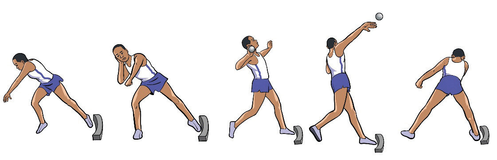

Activity 2.4
Practice shot gripping and placement repetitively until you master the skills.
Putting the shot
Putting the shot refers to the pushing of a heavy metal ball from the shoulder using one hand. There are two fundamental techniques for putting the shot: the linear technique and the rotational technique.
Linear technique
The linear technique is also known as glide technique, involves the shot putter moving in a straight line from the starting position to the centre of the circle. The following are the steps for putting shot by linear technique:
- (i) Stand at the back of the circle with your back facing the throwing direction;
- (ii) Squat slightly with shot placed against the neck supported by fingers;
- (iii) Shift your weight onto the rear leg while torso relaxed;
- (iv) Drive back with your rear leg, pushing off the toe, keeping hips low and rear leg land approximately in the centre pointing slightly to the front.
- (v) As rear leg land in the centre, place the front leg at the back of the circle, slightly open to the front.
- (vi) Turn hips and shoulders toward the throwing sector upon reaching the front of the circle;
- (vii) Push the shot explosively forward and upward while engaging the core as shown in Figure 2.11; and
- (viii) Quickly bring the rear leg forward to prevent fouling and remain inside the circle until the shot lands.

a
b
c
d
e